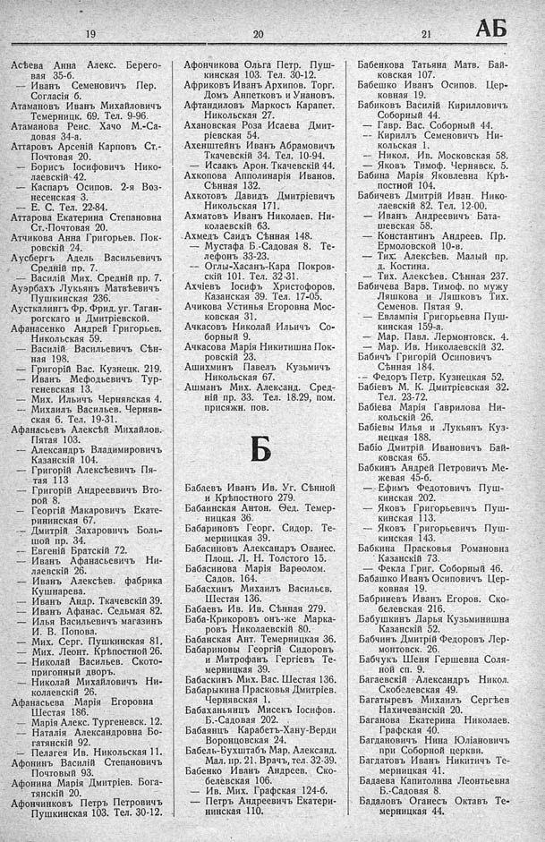

Лист источника 357
Скан

Распознанный текст
19
Асѣева Анна Алекс. Берего-
вая 35-б.
— Иванъ Семеновичъ Пер.
Согласія 6.
Атамановъ Иванъ Михайловичъ
Темерницк. 69. Тел. 9-96.
Атаманова Реис. Хачо М.-Са-
довая 34-а.
Аттаровъ Арсеній Карповъ Ст.-
Почтовая 20.
— Борисъ Іосифовичъ Нико-
лаевскій 42.
— Каспаръ Осипов. 2-я Воз-
несенская 3.
— Е. С. Тел. 22-84.
Аттарова Екатерина Степановна
Ст.-Почтовая 20.
Атчикова Анна Григорьев. Пок-
ровскій 24.
Аусбергъ Адель Васильевичъ
Средній пр. 7.
— Василій Мих. Средній пр. 7.
Ауэрбахъ Лукьянъ Матвѣевичъ
Пушкинская 236.
Аусткалингъ Фр. Фрид. уг. Таган-
рогскаго и Дмитріевской.
Афанасенко Андрей Григорьев.
Никольская 59.
— Василій Васильевичъ Сѣн-
ная 198.
— Григорій Вас. Кузнецк. 219.
— Иванъ Мефодьевичъ Тур-
геневская 13.
— Мих. Ильичъ Чернявская 4.
— Михаилъ Васильев. Черняв-
ская 6. Тел. 19-31.
Афанасьевъ Алексѣй Михайлов.
Пятая 103.
— Александръ Владимировичъ
Казанскій 104.
— Григорій Алексѣевичъ Пя-
тая 113
— Григорій Андреевичъ Вто-
рой 8.
— Георгій Макаровичъ Екате-
рининская 67.
— Дмитрій Захаровичъ Боль-
шой пр. 34.
— Евгеній Братскій 72.
— Иванъ Афанасьевичъ Ни-
лаевскій 26.
— Иванъ Алексѣев. фабрика
Кушнарева.
— Иванъ Андр. Ткачевскій 39.
— Иванъ Афанас. Седьмая 82.
— Илья Васильевичъ магазинъ
И. В. Попова.
— Мих. Серг. Пушкинская 81.
— Мих. Леонт. Крѣпостной 26.
— Николай Васильев. Ското-
пригонный дворъ.
— Николай Михайловичъ Ни-
колаевскій 26.
Афанасьева Марія Егоровна
Шестая 186.
— Марія Алекс. Тургеневск. 12.
— Наталія Александровна Бо-
гатянскій 92.
— Пелагея Ив. Никольская 11.
Афонинъ Василій Степановичъ
Почтовый 93.
Афонина Марія Дмитріев. Бога-
тянскій 20.
Афончинковъ Петръ Петровичъ
Пушкинская 103. Тел. 30-12.
20
Афончикова Ольга Петр. Пуш-
кинская 103. Тел. 30-12.
Африковъ Иванъ Архипов. Торг.
Домъ Анпетковъ и Унановъ.
Афтандиловъ Маркосъ Карапет.
Никольская 27.
Ахановская Роза Исаева Дмит-
ріевская 54.
Ахенштейнъ Иванъ Абрамовичъ
Ткачевскій 34. Тел. 10-94.
— Исаакъ Арон. Ткачевскій 44.
Ахкопова Апполинарія Иванов.
Сѣнная 132.
Ахкотовъ Давидъ Дмитріевичъ
Никольская 171.
Ахматовъ Иванъ Николаев. Ни-
колаевскій 63.
Ахмедъ Саидъ Сѣнная 148.
— Мустафа Б.-Садовая 8. Те-
лефонъ 33-23.
-- Оглы-Хасанъ-Кара Покров-
скій 101. Тел. 32-31.
Ахчіевъ Іосифъ Христофоров.
Казанская 39. Тел. 17-05.
Ачикова Устинья Егоровна Мос-
ковская 31.
Ачкасовъ Николай Ильичъ Со-
борный 9.
Ачкасова Марія Никитишна Пок-
ровскій 23.
Ашихминъ Павелъ Кузьмичъ
Никольская 67.
Ашманъ Мих. Александ. Сред-
ній пр. 33. Тел. 18.29, пом.
присяжн. пов.
Б
Бабаевъ Иванъ Ив. Уг. Сѣнной
и Крѣпостного 279.
Бабаинская Антон. Ѳед. Темер-
ницкая 36.
Бабариновъ Георг. Сидор. Те-
мерницкая 39.
Бабасиновъ Александръ Ованес.
Площ. Л. Н. Толстого 15.
Бабасинова Марія Варѳолом.
Садов. 164.
Бабасхинъ Михаилъ Васильев.
Шестая 136.
Бабаевъ Ив. Ив. Сѣнная 279.
Баба-Крикоровъ онъ-же Марка-
ровъ Николаевскій 80.
Бабанская Ант. Темерницкая 36.
Бабариновы Георгій Сидоровъ
и Митрофанъ Гергіевъ Те-
мерницкая 39.
Бабаскинъ Мих. Вас. Шестая 136.
Бабарыкина Прасковья Дмитріев.
Чернявская 1.
Бабаханьянцъ Мисекъ Іосифов.
Б.-Садовая 202.
Бабаянцъ Карабетъ-Хану-Верди
Воронцовская 24.
Бабель-Бухштабъ Мар. Александ.
Мал. пр. 21. Врачъ, тел. 32-39.
Бабенко Иванъ Андреев. Ско-
белевская 106.
— Ив. Мих. Графская 124-б.
— Петръ Андреевичъ Екатери-
нинская 110.
21
АБ
Бабенкова Татьяна Матв. Бай-
ковская 107.
Бабешко Иванъ Осипов. Цер-
ковная 19.
Бабиковъ Василій Кирилловичъ
Соборный 44.
— Гавр. Вас. Соборный 44.
-- Кириллъ Семеновичъ Ни-
кольская 1.
— Никол. Ив. Московская 58.
— Яковъ Тимоф. Чернявск. 5.
Бабина Марія Яковлевна Крѣ-
постной 104.
Бабичевъ Дмитрій Иван. Нико-
лаевскій 82. Тел. 12-00.
— Иванъ Андреевичъ Бата-
шевская 58.
— Константинъ Андреев. Пр.
Ермоловской 10-в.
— Тих. Алексѣев. Малый пр.
д. Костина.
— Тих. Алексѣев. Сѣнная 237.
Бабичева Варв. Тимоф. по мужу
Ляшкова и Ляшковъ Тих.
Семенов. Пятая 9.
— Евлампія Григорьевна Пуш-
кинская 159-а.
— Мар. Павл. Лермонтовск. 4.
— Мар. Ив. Николаевскій 32.
Бабичъ Григорій Осиповичъ
Сѣнная 184.
-- Федоръ Петр. Кузнецкая 52.
Бабіевъ М. К. Дмитріевская 32.
Тел. 23-72.
Бабіева Марія Гаврилова Ни-
кольскій 26.
Бабіевы Илья и Лукьянъ Куз-
нецкая 188.
Бабіо Дмитрій Ивановичъ Бай-
ковская 65.
Бабкинъ Андрей Петровичъ Ме-
жевая 45-б.
— Ефимъ Федотовичъ Пуш-
кинская 202.
— Яковъ Григорьевичъ Пуш-
кинская 113.
— Яковъ Григорьевичъ Пуш-
кинская 143.
Бабкина Прасковья Романовна
Казанскій 73.
— Фекла Григ. Соборный 46.
Бабашко Иванъ Осиповичъ Цер-
ковная 19.
Бабриневъ Иванъ Егоров. Ско-
белевская 216.
Бабушкинъ Дарья Кузьминишна
Казанскій 52.
Бабчинъ Дмитрій Федоровъ Лер-
монтовск. 26.
Бабчукъ Шеня Гершевна Соля-
ной сп. 9.
Багаевскій Александръ Никол.
Скобелевская 49.
Багатыревъ Михаилъ Сергѣев
Нахичеванскій 20.
Баганова Екатерина Николаев.
Графская 40.
Багдановичъ Нина Юліановичъ
при Соборной церкви.
Багдатовъ Иванъ Никитичъ Те-
мерницкая 41.
Бадаева Капитолина Леонтьевна
Б.-Садовая 8.
Бадаловъ Оганесъ Октавъ Те-
мерницкая 44.